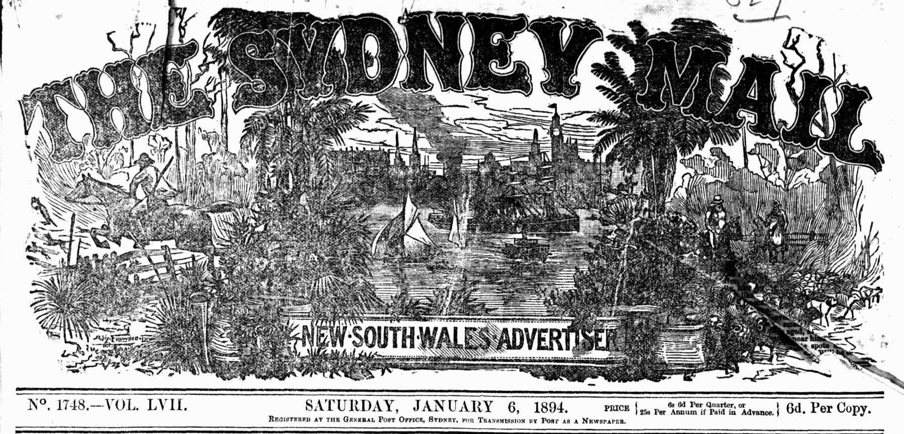

15.2. Accessing data about newspaper & gazette pages#

Attention
This guide is currently under development. For more information and discussion see the list of issues on GitHub. Comments are welcome.
What are pages?#
Printed newspaper pages are easy to understand. You can read them, you can turn them, you can wrap your fish and chips in them. Digitised newspaper pages in Trove are a bit more complex and exist in several related forms.
Pages are metadata#
In printed newspapers, pages are the main means of navigation. But in Trove, users search for articles, and have to browse up along the breadcrumbs trail to find the current page. Every digitised article has a metadata field that records the number of the page on which the article was published. That number is displayed in the web interface and included in article records delivered through the Trove API. The page metadata generally corresponds to the numbers printed on the original pages. You can search for articles on a specific page using the firstpageseq index.
Beware these page peculiarities!
Newspaper issues sometimes include special supplements with their own internal page numbering. This means, for example, that an issue could contain multiple pages numbered as
1. You can identify pages in supplements using thepageSequencemetadata field.Some periodicals don’t start each issue at page number 1! For example, until 1908 the Sydney Mail and New South Wales Advertiser had continuous page numbering across all issues in a year. So the issue dated 8 September 1894 actually starts with page number
472.
Pages are images#
The digitisation process creates an image of each newspaper page. These images can be downloaded in different resolutions by using the page’s unique identifier to construct a direct url. Articles are extracted from page images by the OCR process.
Pages are entry points#
You can save and share links to pages. These links open the page in the Trove web interface and display a list of included articles. You can also find page links in the trovePageUrl field of an article’s metadata. However, while you can view pages in the Trove web interface, you can’t access information about individual pages using the API – they just don’t exist as separate entities.
Pages are sometimes missing#
Pages that were missing when a newspaper was digitised are usually marked by placeholder images. These missing pages, like other pages, have unique identifiers. You can construct links to them, and even download the placeholder, but they’re not really there. Because the pages haven’t gone through the OCR process, no articles from them will show up in search results. This raises the question, how many newspaper and gazette pages are missing from Trove?
{kind=link}
Fig. 15.4 Example of a missing page placeholder, from The Sydney Mail and New South Wales Advertiser, 6 January 1894, page 1#
Page links and identifiers#
Each newspaper and gazette page has a unique identifier. This identifier pops up in links to pages and PDFs and can be used to download a page image. But where do you find it?
In the web interface look under the ‘Cite’ tab of an article and you’ll see a page identifier of the form http://nla.gov.au/nla.news-page16635065.
{kind=link}
Fig. 15.5 Example of a page identifier found in an article’s ‘Cite’ tab.#
If you click on this link, you get redirected to a different url that looks like this https://trove.nla.gov.au/newspaper/page/16635065. Note that both urls contain the same number – this is the page’s numeric identifier.
You can also use the API to get page identifiers from article metadata, but they’re not included by default. If you search for articles using the /result endpoint, or request a particular article using the /newspaper endpoint, you have to set the reclevel parameter to full to include the page identifiers.
Here’s an example of an article record obtained from the API using reclevel=full.
{
"id": "41697877",
"url": "https://api.trove.nla.gov.au/v3/newspaper/41697877",
"identifier": "https://nla.gov.au/nla.news-article41697877",
"heading": "WRAGGE AND WEATHER CYCLES.",
"category": "Article",
"title": {
"id": "101",
"title": "Western Mail (Perth, WA : 1885 - 1954)"
},
"date": "1922-11-23",
"page": "4",
"pageSequence": "4",
"troveUrl": "https://.nla.gov.au/nla.news-article41697877",
"trovePageUrl": "https://nla.gov.au/nla.news-page3522839",
"illustrated": "N",
"wordCount": "1054",
"correctionCount": "1",
"tagCount": "0",
"commentCount": "0",
"listCount": "0",
"lastCorrection": {
"by": "*anon*",
"lastupdated": "2016-09-12T07:08:57Z"
},
"pdf": [
"https://trove.nla.gov.au/ndp/imageservice/nla.news-page3522839/print"
]
}

The identifier of the page on which this article was published is included in the trovePageUrl field. But there’s also a pdf field that contains a list of links that include the same numeric identifier. You can use these links to download PDF copies of pages.
If you’re just interested in front pages, there’s also a little trick you can use to get page identifiers from issue urls.
A common task is to get from a web link to an image or PDF. You can do this by extracting the numeric part of the link with a regular expression, then using the number to construct a new url to download the format of your choice.
import re
page_url = "https://nla.gov.au/nla.news-page3522839"
page_id = re.search(r"page(\d+)", page_url).group(1)
pdf_url = f"https://trove.nla.gov.au/ndp/imageservice/nla.news-page{page_id}/print"
# Display the result as a clickable link so you can try it!
display(Markdown(f"<{pdf_url}>"))
There are more examples of this below.
Page metadata#
Unlike titles and articles, there’s no direct method for requesting metadata about a newspaper page from the Trove API. You can’t, for example, submit a page identifier to the API and get back its publication date, the newspaper it came from, or a list of articles published on it. Pages are linked to articles and issues, but you can only access those links from the other end – from article and issue records.
As described above, you can get page identifiers from an article record simply by setting the reclevel parameter to full. But how can you go in the other direction, and get the identifier for a specific page?
Get the identifier of a specific page by searching for articles#
To get the identifier of a specific page, you need to construct a very precise search for articles published on that page using the /result endpoint. You can do this by specifying the title (the newspaper name), the publication date, and the page number. Once you have the search results, you can extract the page identifier from the article records.
The newspaper title is set using the l-title parameter. For example, the identifier for the Canberra Times is 11, so to limit your search to the Canberra Times you’d set l-title to 11.
The date is set using the date index within the q (query) parameter. You use the date index by supplying a date range. If you want a single day, the first date in the range should be the day before the date you want. The dates need to be in ISO format – YYYY-MM-DDT00:00:00Z. For example, if we wanted a page from 2 November 1942, we’d set the q parameter to date:[1942-11-01T00:00:00Z TO 1942-11-02T00:00:00Z].
To request a specific page number, you use the firstpageseq index in the q parameter. To find page 3, you’d add firstpageseq:3 to the value for q.
Finally, you need to add reclevel=full to the request. This asks for additional metadata about the article, including the page identifier.
So, in summary, if we wanted the identifier of page 3 of the Canberra Times from 2 November 1942, your request would include the following parameters:
category=newspaperl-title=11q=date:[1942-11-01T00:00:00Z TO 1942-11-02T00:00:00Z] firstpageseq:3reclevel=full

Warning
Some newspaper issues include supplements with their own separate page numbering. The firstpageseq index searches these supplements as well as the main body of the issue. This means your search could return articles from multiple pages. One way of dealing with this is to check the pageSequence field of the article, if it includes an ‘S’ for ‘supplement’, you can ignore it. There’s an example of this in the code below.
The article metadata returned by this search will include a value for trovePageUrl, for example: https://nla.gov.au/nla.news-page682904. You could use this identifier to retrieve an image of the page using the method described below. Here’s a full example:
import requests
# Search parameters
params = {
"q": "date:[1942-11-01T00:00:00Z TO 1942-11-02T00:00:00Z] firstPageSeq:3",
"category": "newspaper",
"l-title": "11",
"reclevel": "full",
"encoding": "json",
"n": 100,
}
# Supply API key using headers
headers = {"X-API-KEY": YOUR_API_KEY}
# Make the request
response = requests.get(
"https://api.trove.nla.gov.au/v3/result", params=params, headers=headers
)
# Get the results as JSON
data = response.json()
# As noted, this can return pages in supplements, so we'll try to exclude them
# by looping through the articles until we find one that's not in a supplement
for article in data["category"][0]["records"]["article"]:
# Make sure there's not an "S" in the pageSequence field by checking if the value is a number
if article["pageSequence"].isnumeric():
# It's not in a supplement, so let's get the page id
page_identifier = article["trovePageUrl"]
break
# If all the returned pages are in a supplement then return none
page_identifier = None
page_identifier
'https://nla.gov.au/nla.news-page682904'
Get a list of front page identifiers#
As described in the section on newspaper issues, you can get information about individual issues from the newspaper/title and gazette/title endpoints. The issue data includes a date and a url. But if you request the issue url you’re redirected to the first page of that issue! This means that you can start with a newspaper, request a list of issues, and then capture the identifiers of all the front pages. Here’s a full example:
import requests
# To get a list of issues from the newspaper/title endpoint you need to set `include`
# to `years` and provide a date range via `range`.
# Here we're setting range to include all of 1930.
params = {"encoding": "json", "include": "years", "range": "19300101-19301231"}
# Supply API key using headers
headers = {"X-API-KEY": YOUR_API_KEY}
# Here's were requesting details about the Canberra Times (id 11)
url = f"https://api.trove.nla.gov.au/v3/newspaper/title/11"
# Get the data
response = requests.get(url, params=params, headers=headers)
data = response.json()
# Get the list of years/issues
years = data["year"]
# Let's get issue details for our range
issues = []
for year in years:
# If the year is in our range it will include an `issue` value
if "issue" in year:
# Add this year's issues
issues += year["issue"]
# We'll use the first 5 values from the list of issues
for issue in issues[:5]:
# This request is getting a web page, so no params or headers required
response = requests.get(issue["url"])
# The request has been redirected to the first page of the issue.
# We can get the new redirected url from the response object.
page_url = response.url
print(f"{issue['date']}: page 1, {page_url}")
1930-01-01: page 1, https://trove.nla.gov.au/newspaper/page/517916
1930-01-02: page 1, https://trove.nla.gov.au/newspaper/page/517925
1930-01-03: page 1, https://trove.nla.gov.au/newspaper/page/517940
1930-01-04: page 1, https://trove.nla.gov.au/newspaper/page/517954
1930-01-06: page 1, https://trove.nla.gov.au/newspaper/page/517967
The number at the end of the page url uniquely identifies that page. It can be used to download an image of the page. While this method is a bit inefficient, forcing us to fire off a request for every issue, it does enable us to link three important pieces of page metadata – the date, the page number, and the page identifier.
Scraping article metadata from a page#
While there’s no direct method for requesting information about a page from the API, there is some useful metadata embedded in the HTML of the Trove web site. If you have a page identifier, you can load the web page and extract a list of articles, including their identifiers, categories, titles, and word count. You can even find the positional coordinates of each article on the page.
==Link to HOW TO or GW notebook==
Page text#
To get the full text content of a page, you need to aggregate the content of all the articles published on that page. The method is much the same as that described above – you search for articles on a specific page by specifying the newspaper, date and page. You also need to set include to articleText to add the full text to the article records. You can then collect the text content of each article. Here’s an example that collects the article texts from a page and uses them to create a wordcloud using the WordCloud package.
import requests
from html2text import html2text
from wordcloud import WordCloud
# Search parameters
params = {
"q": "date:[1942-11-01T00:00:00Z TO 1942-11-02T00:00:00Z] firstPageSeq:3",
"category": "newspaper",
"l-title": "11",
"include": "articleText",
"encoding": "json",
"n": 100,
}
# Supply API key using headers
headers = {"X-API-KEY": YOUR_API_KEY}
# Make the request
response = requests.get(
"https://api.trove.nla.gov.au/v3/result", params=params, headers=headers
)
# Get the results as JSON
data = response.json()
page_text = []
# As noted, this can return pages in supplements, so we'll try to exclude them
for article in data["category"][0]["records"]["article"]:
# Make sure there's not an "S" in the pageSequence field by checking if the value is a number
if article["pageSequence"].isnumeric():
# It's not in a supplement, so let's add the text
# The full text include HTML tags so we'll strip them out with html2text
page_text.append(html2text(article["articleText"]))
# Generate a word cloud
wc = WordCloud(width=500, height=300).generate("\n".join(page_text)).to_image()
Fig. 15.6 Word cloud from the text content of page 3 of the Canberra Times, 2 November 1942.#
Page images and PDFs#
Download a page image#
Once you know the secret formula, getting page images is easy. You can download a page image using a url like this:
https://trove.nla.gov.au/ndp/imageservice/nla.news-page[PAGE ID]/level[ZOOM LEVEL]
Where [PAGE ID] is the page’s numeric identifier, and [ZOOM LEVEL] is a number between 1 and 7, corresponding to the zoom levels in the web interface. The higher the zoom level, the larger the image. As a rough guide:
level
1gives an image around 900 x 1200 px (500kb)level
4gives an image around 2700 x 3500 px (3mb)level
7gives an image around 6100 x 7800 px (7mb)
For example, this url loads the image for the page with the id 517916: https://trove.nla.gov.au/ndp/imageservice/nla.news-page517916/level4
See above for information on finding page identifiers.
Download a page as a PDF#
If you set the reclevel parameter to full when requesting articles from the /result or /newspaper API endpoints, the metadata includes a pdf field with a list of urls. These urls can be used to download PDF versions of the page(s) on which the article was published. For example:
import requests
# Set recelevel to full to include the pdf field
params = {"encoding": "json", "reclevel": "full"}
# Supply API key using headers
headers = {"X-API-KEY": YOUR_API_KEY}
# Use the /newspaper endpoint to request metadata for the article with the id 162833980
response = requests.get(
"https://api.trove.nla.gov.au/v3/newspaper/162833980",
params=params,
headers=headers,
)
data = response.json()
# PDF urls can be found in the PDF field
pdfs = data["pdf"]
print(pdfs)
['https://trove.nla.gov.au/ndp/imageservice/nla.news-page16636766/print', 'https://trove.nla.gov.au/ndp/imageservice/nla.news-page16636767/print']
From the example above you can see that the article (id 162833980) was published across two pages:
https://trove.nla.gov.au/ndp/imageservice/nla.news-page16636766/print
https://trove.nla.gov.au/ndp/imageservice/nla.news-page16636767/print
Once you have the urls you can use them to download the PDFs.
import re
from pathlib import Path
for pdf in pdfs:
# Extract the page identifier to use in the file name
page_id = re.search(r"nla.news-page\d+", pdf).group(0)
# Download the pdf
response = requests.get(pdf)
# Save the PDF using the page_id as a filename
Path(f"{page_id}.pdf").write_bytes(response.content)
If you have a collection of page urls or identifiers (such as front pages from issues), you can construct your own urls to download pdfs using the format https://trove.nla.gov.au/ndp/imageservice/nla.news-page[PAGE ID]/print.
Download a collection of page images or PDFs#
Perhaps you want to download all the front pages of a particular newspaper, the front page of all newspapers on a particular date, or the pages on which a collection of articles was published. Use one of the methods described above to get a list of page urls. Then loop through the list, extracting the page id, and constructing the image download url for each page. For example:
import re
from pathlib import Path
import requests
selected_pages = [
"https://trove.nla.gov.au/newspaper/page/517916",
"https://trove.nla.gov.au/newspaper/page/517925",
"https://trove.nla.gov.au/newspaper/page/517940",
"https://trove.nla.gov.au/newspaper/page/517954",
"https://trove.nla.gov.au/newspaper/page/517967",
]
for page_url in selected_pages:
# Extract the numeric id from the url
page_id = re.search(r"\/(\d+)\/?$", page_url).group(1)
# Construct the url you need to download an image of the page
# If you need different sizes, change `level4` to a number between 1 and 7 (7 is largest)
image_url = (
f"https://trove.nla.gov.au/ndp/imageservice/nla.news-page{page_id}/level4"
)
# Download the image
response = requests.get(image_url)
# Save the image using the id in the file name
Path(f"nla.news-page{page_id}.jpg").write_bytes(response.content)
Fig. 15.7 Front page downloaded by the code above: https://trove.nla.gov.au/newspaper/page/517967#